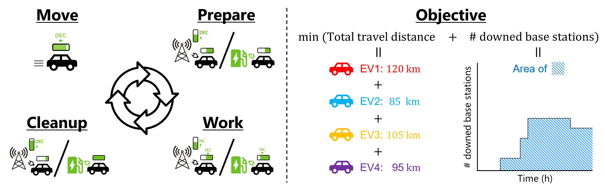
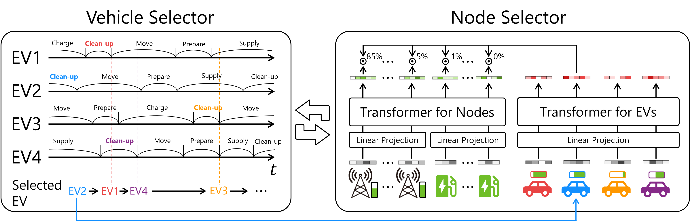
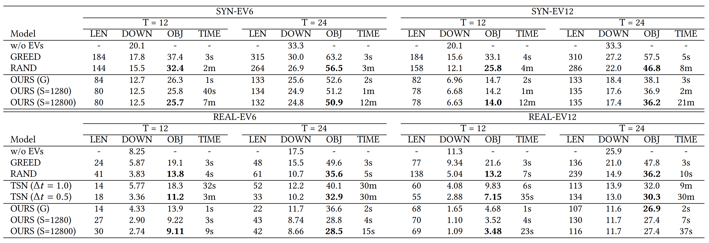

With natural disasters increasing, maintaining infrastructure during disasters has become more critical. As a telecoms campany, our campany has a mission to keep providing the services even during power outages by disasters. The most fundamental challenge there is maintaining the battery of telecoms base stations. We address this challenge by leveraging Electric Vehicles (EVs) as emergency power sources: EVs go around to directly supply their power to the base stations, whose power is continuously decreasing. The goal is to find the EVs' routes that minimize both total travel distance and the number of downed base stations. In this research, we formulates our problem settings as a new variant of the Electiric Vehicle Routing Problem (EVRP) and solve it with a reinforcement learning model.
The EVRP is a Vehicle Routing Problem that considers EVs power consumption by travel and recharging EVs power in the middle of the route. In contrast to existing EVRPs, our problem additioanlly considers the discharge of EV power at destinations and other mandatory details (i.e., prepare/cleanup time). The discharge time/amount depends on the arrival timing, therby making the optimization more complicated than ever. On the other hand, EVs cycle through four actions: move, prepare, discharge/recharge, and cleanup. Note that, in the context of RL, the action space here is only move (i.e., determining the next destination node), and the others are just acompannied actions to move.
Our algorithm consists of a rule-based vehicle selector and a Transformer-based node selector. The vehicle selctor first selects an EV that can start move (finish cleanup) the earliest, then the node selector determines the next destination node of the selected EV. By repeating these two processes, it sequentially determines the destination of each EV. As a result, we obtain the sequence of the destinations as a route. We train the node selector with a policy gradient algorithm, REINFORCE.
We compared our algorithm with baselines on synthetic datasets and real datasets. The baselines include naive approaches (greedy assignment (GREED) and random assignment (RAND)) and a constraint programming for Time-Space Network (TSN). We set the time limit to 30 minutes considering practical operations. The results show that our algorithm consistently outperforms the baselines in interms of both the objective value (OBJ) and computational time (TIME).
Preparing.....